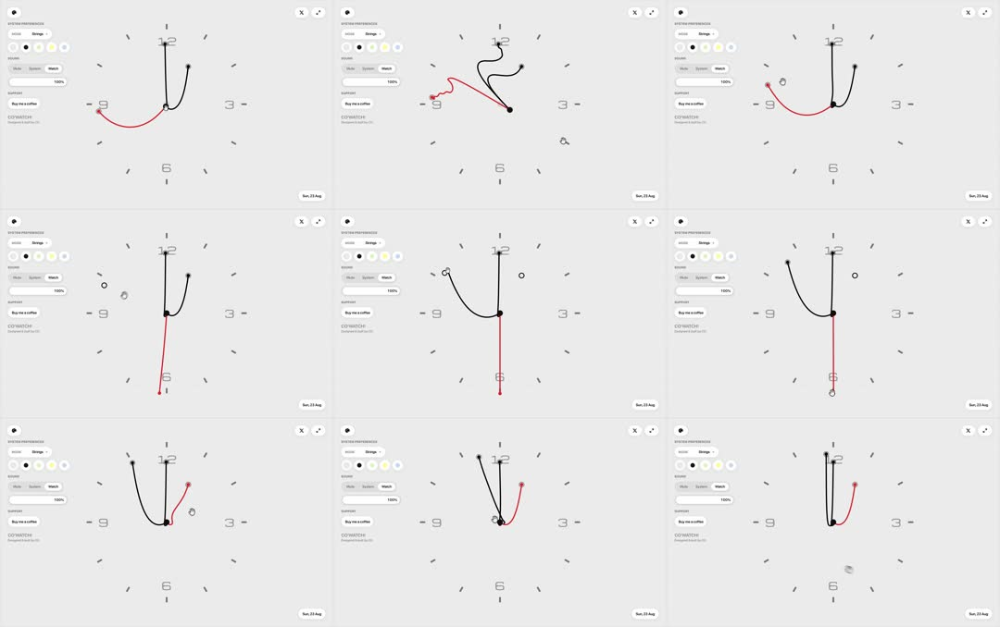

Media
Frame-by-frame

0-100%
Light grey dial, small tick marks + 4 numerals; hands at various positions across frames - red seconds hand sweeps continuously (visible at 9, 6, 3 positions), minute hand advances subtly; panel on left: MODE toggle (Analog), STYLE pills (Minimal...), color dots row (black, cream, yellow, white), 'SUNRISE/SUNSET'?, support link, 'CO'WATCH' footer. Numerals and ticks stay perfectly still - only hands move.